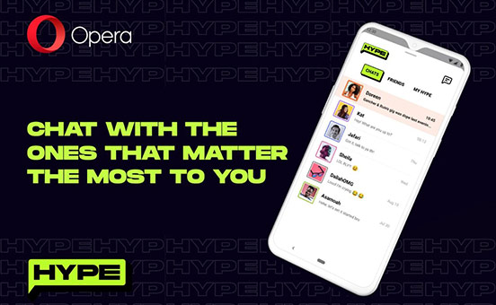

Opera进军非洲即时通讯市场 “Opera+”战略再出击
2021-08-13
Opera是世界知名浏览器巨头之一，现已从老牌浏览器升级为AI驱动的资讯和服务分发平台。Opera所绘就的图景已经远远不是一款浏览器那么简单。借助“Opera+”，在累积了海量用户并获取全球流量基昆仑万维将占据更大的出海版图。
6月9日，Opera宣布已经在肯尼亚、南非、赞比亚和加纳推出Hype——一个即时聊天服务。Hype内嵌在Opera Mini浏览器中。在浏览器里嵌入即时通讯、社交功能，并非Opera第一次这么做了，事实上，Opera正是通过在浏览器里内嵌入Instagram、WhatsApp、Facebook Messenger等社交功能，打开了新的流量通道，与全球其他几大浏览器巨头也有了品牌区隔。而Hype是Opera将这个创意继续向全球细分市场推进的其中一步。
Hype是Opera推出的专门面向非洲地区的即时通讯服务，当非洲的用户想要线上聊天时，只需要建立一个账户，就能通过端到端加密立即开始聊天。这意味着非洲地区的用户不仅可以使用Opera浏览器本身的功能，现在还可以与朋友在线聊天，并与其他Hype用户分享自己创建的表情包、贴图和gif。换句话说，Hype完全迎合了非洲年轻人的社交需求。

2019年，Opera创新推出世界上首款游戏浏览器Opera GX桌面版，利用浏览器切入到游戏领域，由于独树一帜的功能及贴合游戏玩家的便捷性，Opera GX迅速成为全球千万游戏玩家的首选浏览器，俘获了大批游戏玩家的心。截至目前，业内还没有出现第二家专为游戏玩家打造的浏览器。自Opera GX 浏览器桌面版（Windows 和 macOS）上线以来，全球用户对Opera GX移动，期盼在移动端同步获得更好的体验。2019年，Opera创新推出世界上首款游戏浏览器Opera GX桌面版，利用浏览器切入到游戏领域，由于独树一帜的功能及贴合游戏玩家的便捷性，Opera GX迅速成为全球千万游戏玩家的首选浏览器，俘获了大批游戏玩家的心。截至目前，业内还没有出现第二家专为游戏玩家打造的浏览器。自Opera GX 浏览器桌面版（Windows 和 macOS）上线以来，全球用户对Opera GX移动，期盼在移动端同步获得更好的体验。